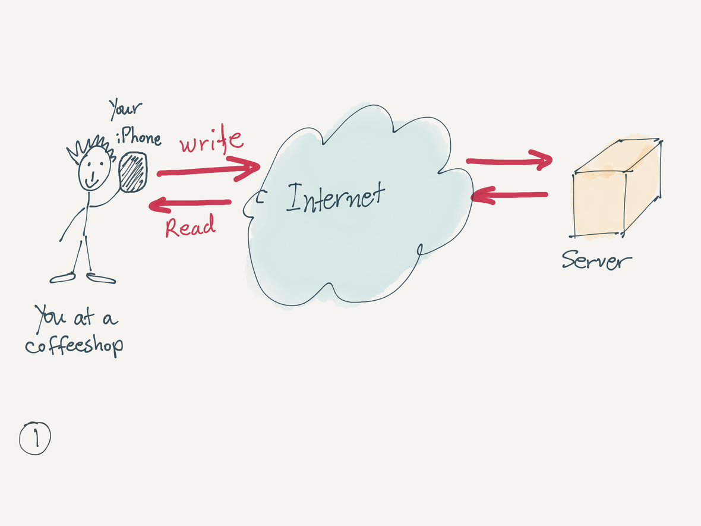
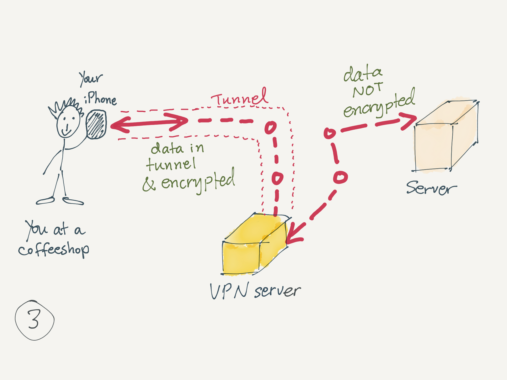

February 2017
iOS & Apple news
iOS 10.2.1 has been released.
Meanwhile, Apple gave an overview to developers of 10.3, to be released in the near future. It packs a lot of features. Take a look:
Walt Mossberg writes: 7 years later, we're still asking the wrong questions about the iPad. `Asking if it's a laptop replacement means you are overlooking the future of computing. [ . . . ] The right question is what does a computer in 2017 need to be? '
Apples 1Q2017 financial results show it has returned to growth, reports John Gruber. `The Company posted all-time record quarterly revenue of $78.4 billion.' iPhone continues to be the dominant revenue source. Services are up significantly.
Here are all the results in pretty graphs, compiled by SixColors.
The only product whose revenue decreased was the iPad. John Gruber speculates on reasons why, including the idea that the replacement cycle is slower that the iPhone's: many people replace their iPhone every 1-2 years. Fewer replace their iPad as often.
Tim Cook's remarks about the Watch: `It was also our best quarter ever for Apple Watch -- both units and revenues -- with holiday demand so strong that we couldn't make enough. Apple Watch is the best-selling smartwatch in the world, and also the most-loved, with the highest customer satisfaction in its category by a wide margin. Apple Watch is the ultimate device for a healthy life, and it's the gold standard for smartwatches. We couldn't be more excited about Apple Watch.'
It's time to admit Apple Watch is a success, Renee Ritchie writes or iMore. Additionally, John Gruber argues we should stop referring to `smartwatches', just consider `Apple Watch' a watch. `In September, Apple claimed watch revenues second only to Rolex. How can it not be considered a hit at this point? '
What is VPN ?
What is VPN and why do you need it?
VPN stands for Virtual Private Network. It adds a layer of security to protect data you send and receive over a network. It is especially useful when you are using public WiFi's, such as coffeeshops or other public wireless access points that are often not protected. Additionally, even when you use a private network, you might still prefer to have the extra security of a VPN; for example, if you want to access sensitive personal data while visting a friend's house and using their WiFi whose setup might not be very secure.
With VPN, data is packaged and encrypted. If someone intercepts data your are sending or receiving, the data will not be decipherable.
VPN provides security at three levels: data encryption (what you send or receive), authentication (to prevent unauthorized users to enter the network), and message integrity (to detect any tampering of data transmission).
Additionally, a VPN can often be used to get around geographical restrictions and/or censorship, or to connect to proxy servers to hide your identity and location. Some VPNs compress data for faster transmission, especially for mobile devices.
Here is a review of how personal VPN services work:

Data access without VPN.

Without VPN: a closer look.

Data access with VPN.
What are the downsides to using a VPN? Two aspects to consider: impact to performance (and consequently also to battery life, for mobile devices), and the need to trust a 3rd party. Performance impact is generally minimal when using a good VPN service, but you should also look into how many servers they have globally or near you. The VPN company you are using must be one you trust: a) to implement a secure design (to be technically competent), and b) to be honest and not access or share any data (remember: your data gets decrypted by the VPN company). Many VPN companies do not log your activities. Check how their privacy policy and how they respond to requests for data.
What are good uses o VPN? Examples such as: you are at a public WiFi and want to access your email, or want to send a document. You want to search for information about, say, a health condition, without having your ISP know you are doing so. (However, a VPN will not protect you if you access personal financial info or make a purchase online without HTTPS connection.) VPN does not protect you from everything, but it does protect you from a lot o common uses.
Do I really need a VPN? It depends on how you feel about data security and privacy. For example, if you use public WiFi's, and access your email, you need a VPN to protect your data. (If you only read newspapers and consistently avoid reading or sending emails, you might care less.) If you do not want to let your ISP (Internet Service Provider such as Cox or Comcast) know about every internet search you do, even at home, your online browsing habits and so on, you might want to use a VPN. If you travel abroad, you might want to use a VPN to access data that is only available to you in the US.
Worth noting: Corporate VPNs protect access to company data; however, employees who have a company VPN do not get any protection in their personal use of the rest of the internet.
Also worth noting: some communication services come with end-to-end encryption built in. For example, iMessage between iOS users has E2E encryption and is safer than most email services. So you can safely use iMessage in a public WiFi without concerns.
Should you use a free VPN? Free is often not a good deal (think about trust mentioned above). Things to consider: what is their business model? Free services often do not last. We need to pay and support services we want to depend on. On the other hand, if a free offer is part of a `freemium' plan, this may be a good deal. Companies often offer a free version for you to test with the hopes that you will upgrade. That's worth considering.
Should you use a VPN that offers a lifetime purchase? Things to consider: very few things last a lifetime, especially company services. How likely is a company going to outlive your lifespan or your VPN needs? You may be better off going with a VPN company you trust and has been around a few years, but does not make lifetime promises.
Read more about Intro to VPN on Wikipedia, a VPN overview (old but still good technical overview). See also Mobile VPN on Wikipedia.
VPN app services to consider
There are a lot of VPN services. Here is a small list of VPNs that are available for iOS, offer a good service, and have many positive user reviews.
TunnelBear provides a `simple, private, free access to the open internet.' They provide plans: Free: with up to 500MB/mo; $8/mo, unlimited data; $50/year, unlimited data. Per user, up to 5 devices connected. They support iOS, Mac, Win, and more. (Roger H. from our own iPUG uses this.)
Cloak is another VPN service considered to be very good. They provide plans for individuals and for teams. Starting at: Free trial for 14 days; Subscription: $3/mo, 5 GB/mo; $10/mo, unlimited data; $100/year, unlimited; Passes: week ($4), Month ($10), year ($100). Per user, there are no limits to the number of devices connected. They support iOS and Mac.
Private Internet Access is another recommended VPN service, often used by US citizens living abroad. They offer plans: $7/mo, unlimited; $40/year, unlimited. Per user, up to 5 devices connected. They support: iOS , Mac, Win, Android, and more.
Kevin also pointed us to Windscribe, a VPN service that offers various plans, including a a light option free of charge, for only one device; they also offer upgrades to paid plans.
Kevin mentioned that he has been using NetShade VPN for many years. They offer a variety of paid plans for Mac and for iOS.
ExpressVPN is often recommended by techies. The offer plans: $13/mo, unlimited data; $100/year, unlimited, or 6 months for $60, unlimited. They support iOS, Mac, Win, Android, and more.
iOS apps
Google maps for iOS now offers real-time `popular times' in the latest update. Handy, if you need to know how crowded a restaurant will be when you get there.
Traveling soon? Consider this list of apps for international travel.
Bear is rapidly releasing new features and improvements. It seems to be on a fast track, competing with Evernote, and with a longterm vision. It's available for iOS and Mac. There are free versions and a subscription version, with sync abilities across devices. Read a thorough overview of Bear, by Shiny Frog. Tech writer Federico Viticci writes about Why he is considering Bear as a Notes replacement.
1Blocker is a free iOS utility app that lets you block annoying ads and trackers from all the websites you visit. It is customizable and free. Olga recommends it highly.
A secure email service is provided by ProtonMail. They have released an email clients for iOS and you can also access your email via a web browser. They take security and privacy very seriously, and you are their customer (not advertisers, nor anyone else).
If you come across a website with Adobe Flash, your iOS device will not read or play the Flash parts. Kevin reminded us that Puffin is a web browser for iOS that can convert the Flash portions and let you see them.
gadgets & accessories
A handy iPhone camera accessory: a 90-degree periscoping lens that can be used for photographing at different angles, or when you need to check the live view at a different angle than the one you photograph, or as a `spy' lens.
Roger H. points us to Keezel, an IndiGoGo project. It will be a personal WiFi station that offers online security via VPN.
iPad Accessories for the iPad enthusiast, a list of gadgetry compiled by GearAdvice.
Many of our iPUG members recommend Rainey's Luggage and Gifts on Speedway for iOS travel accessories, including plug adapters.
Moonlite is a bedtime projector for your iPhone.
Petra has recently bought this power station dock for her iPhone and Apple Watch.
Kevin has been using this dock for iPhone and Apple Watch. He recommends it for those who use a thick iPhone case, as it accommodates different dimensions.
Gamevice reveals new and improved Gaming Controllers for iPhone and iPads.
iHealth Oxygen is offered at a 36% discount by Macworld. It measures pulse rate, oxygen level and perfusion.
Lee told us about BearTooth, a networking gadget for times when you do not have access to the internet (or want to avoid using the internet). Beartooth lets you communicate with others in a group using your iPhone. This could be very useful for a group of hikers, or a group of travelers to stay in touch with each other.
Pay
Recall that Apple Pay requires an iPhone, or an iPad, or an Apple Watch. Here is how to use Apple Pay on the web, while using iOS 10 and also with Safari and macOS Sierra. Once you enable Apple Pay on your mobile device, Safari on a Mac or on iOS will automatically detect the proximity of an authorized device and will present you with a button to Pay with Apple Pay.
Meriwest Credit Union, a CU often used by IBM employees, now supports Apple Pay.
watch
[ RUMOR ] Apple is rumored to be bringing Theater Mode to the watch, reports 9to5mac.
Roger H. points us to Cult of Mac’s Welcome to the Watch Store. This is a new curated store for Watch, with bands and other accessories.
This Apple Watch mount lets you place your watch on your car's steering wheel or bike handlebar.
All about measuring your heart rate via the watch, an overview by Apple.
If you don't get consistent heart rate readings when exercising, Olga suggests trying the underside of your wrist during exercise, especially if you have veins closer to the surface in that area.
Runkeepr: The Best Apple Watch running app sent Garmin Fenix to a drawer, writes ZDNet.
privacy & security
You probably never heard of this genealogy website, but it knows a lot about you, writes the Washington Post. You can ask them to disable public access to you family info.
tips & tricks
Learn how to master Paper for doodling, sketching, drawing, illustrating. This is a wonderful collection of very brief tutorials by an artist, showing you how to use one of the best iOS apps, Paper, by FiftyThree.
Do you have an old iPhone? Here are 6 ways to repurpose it, reports CNET. You can use it as: A backup phone, as a baby monitor, add it to a multi-camera video shoot, leave it at your nightstand (as a clock, alarm, sleep tracker, medication assistant), and more.
general apps & services
A secure email service is provided by ProtonMail. They have released an email clients for iOS and you can also access your email via a web browser. They take security and privacy very seriously, and you are their customer (not advertisers, nor anyone else).